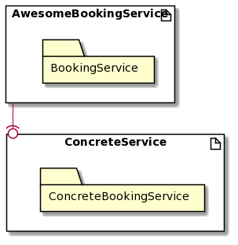
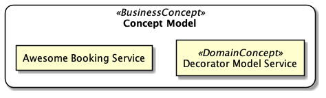
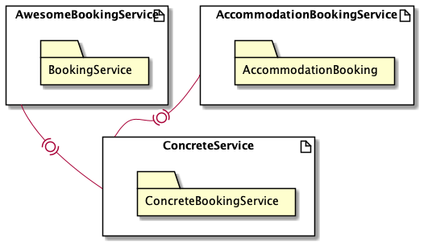
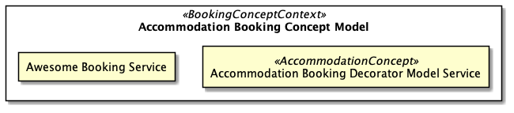

Getting Started¶
Awesome Booking Service started as a small endeavor, that sought to demonstrate:
- how one write specs for Concrete Classes
- verify that implementation can actually fulfil business needs
Code Repository
Source code associated with this Chapter can be found at github.
The main objective was to document a process in a manner that was already demonstrated(see DesignPatternsPHP).
luyandasiko in desktop-app $ mkdir awesome-works
At this point we have just configured our workspace from which we will work from and below is a modular view of our approach.

Architectural Smell
BookingService suggests that AccommodationBookingService can optionally
depend on it.
It is important, in Agile, to timeously revisit your business model if it is improving.

Architectural Review¶
The ability to build a model that you believe works than what actually does is one thing.

There seems to be a hard dependency in our code-base no matter we think our Code Quality is Flexible. The Decorator Pattern allows for this already.
Test Cases¶
As just proof with no proper business value messure bookable item,
lets book it.
PHPSpec Coverage¶
What is PHPSpec?
PHPSPEC ....
It is important, in Agile, to timeously revisit your business model, to check if it is improving or not.
luyandasiko in awesome-booking-service -> feature/automated_acceptance_test_integration [?$]
$ vendor/bin/phpspec run
DigitalClosuxe\Awesome\Service\BookingService\Accommodation\Line\AdditionalBed
24 ✔ is initializable (79ms)
29 ✔ is a booking service
34 ✔ has an accumulated price
39 ✔ has extra bed description
DigitalClosuxe\Awesome\Service\BookingService\Accommodation\Line\HotspotWifi
24 ✔ is initializable
29 ✔ is a booking service
34 ✔ has an accumulated price
39 ✔ has wifi description
DigitalClosuxe\Awesome\Service\BookingService\Type\AccommodationBooking
11 ✔ is initializable
16 ✔ is a booking service type
21 ✔ has a standard price
26 ✔ has description
3 specs
12 examples (12 passed)
88ms
Unit Testing Coverage¶
luyandasiko in awesome-booking-service -> feature/automated_acceptance_test_integration [?$]
$ vendor/bin/phpunit
PHPUnit 9.2.6 by Sebastian Bergmann and contributors.
Runtime: PHP 7.4.8
Configuration: /Users/luyandasiko/awesome-works/awesome-booking-service/phpunit.xml
....... 7 / 7 (100%)
Time: 00:00.048, Memory: 6.00 MB
OK (7 tests, 20 assertions)
Look out for Gherkin, it is a powerful language?
luyandasiko in awesome-booking-service -> feature/automated_acceptance_test_integration [?$]
$ vendor/bin/behat
Feature: Standard Price Accommodation booking
As a Software Engineer
I want to ensure that the Booking Service calculates prices
So that I can verify the correctness of my solution
Scenario: Calculate Standard Price booking # features/bootstrap/booking_services/accommodation_bookings_service.feature:7
Given I have a "DigitalClosuxe\Awesome\Service\BookingService\BookingService" booking Service # FeatureContext::iHaveABookingService()
And I check the Booking Service price # FeatureContext::iCheckTheBookingServicePrice()
Then the Booking Price should equal "40" # FeatureContext::theBookingPriceShouldEqual()
Scenario: Calculate Standard Price booking with Hotspot Wifi # features/bootstrap/booking_services/accommodation_bookings_service.feature:12
Given I have a "DigitalClosuxe\Awesome\Service\BookingService\BookingService" booking Service # FeatureContext::iHaveABookingService()
And I add Wifi Hotspot as an extra to my booking # FeatureContext::iAddWifiHotspotAsAnExtraToMyBooking()
Then the Booking Price should equal "42" # FeatureContext::theBookingPriceShouldEqual()
Scenario: Calculate Standard Price booking with extra Bed # features/bootstrap/booking_services/accommodation_bookings_service.feature:17
Given I have a "DigitalClosuxe\Awesome\Service\BookingService\BookingService" booking Service # FeatureContext::iHaveABookingService()
And I add an extra Bed as an extra to my booking # FeatureContext::iAddAnExtraBedAsAnExtraToMyBooking()
Then the Booking Price should equal "70" # FeatureContext::theBookingPriceShouldEqual()
Scenario: Calculate Standard Price booking with Hotspot Wifi and extra Bed # features/bootstrap/booking_services/accommodation_bookings_service.feature:22
Given I have a "DigitalClosuxe\Awesome\Service\BookingService\BookingService" booking Service # FeatureContext::iHaveABookingService()
And I add Wifi Hotspot and a Bed as an extra to my booking # FeatureContext::iAddWifiHotspotAndABedAsAnExtraToMyBooking()
Then the Booking Price should equal "72" # FeatureContext::theBookingPriceShouldEqual()
4 scenarios (4 passed)
12 steps (12 passed)
0m0.10s (9.75Mb)
Solution Design¶
It turns out that, if we spec an implementation we afford ourselves
an opportunity to refinement. Let us imagine the class implementation
for a typyical AccommodationBookingService
Development Pipeline as a Process Task¶
Each Software Engineer should be able to create a Request for Proposal Report Document for Sprint Planning Review.
